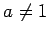
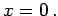

Die Potenzfunktion
ist für k > 0 und k < 0 getrennt zu betrachten. Dabei reicht eine Beschränkung auf den Fall a = 1 aus, weil die Kurven für  gegenüber der von y = xk in Richtung der y-Achse mit dem Faktor a gestreckt und bei negativem a an der x-Achse zu spiegeln sind.
Die Kurve verläuft durch die Punkte (0,0) und (1,1). Für k>1 berührt sie die x-Achse im Koordinatenursprung (s. 4. Abbildung), für k<1 ebenfalls im Koordinatenursprung die y-Achse (s. 1. bis 3. Abbildung). Für n gerade gibt es zwei zur x-Achse symmetrische Zweige (1. und 4. Abbildung), für m gerade zwei zur y-Achse symmetrische Zweige (2. und 3. Abbildung). Für m und n ungerade ist die Kurve zentralsymmetrisch zum Koordinatenursprung (2. Abbildung). Die Kurve kann somit im Koordinatenursprung einen Scheitel, einen Wendepunkt oder einen Rückkehrpunkt besitzen. Asymptoten hat sie keine.
Die Kurve ist vom hyperbolischen Typ, wobei die Asymptoten mit den Koordinatenachsen zusammenfallen. Die Unstetigkeitsstelle befindet sich bei  Die Kurve nähert sich der x-Achse asymptotisch um so schneller und der y-Achse um so langsamer, je größer |k| ist. Der Kurvenverlauf und die Symmetrie hinsichtlich der Koordinatenachsen bzw. des Koordinatenursprungs hängen wie im Falle k > 0 davon ab, ob m und n gerade oder ungerade sind. Extrema gibt es keine.